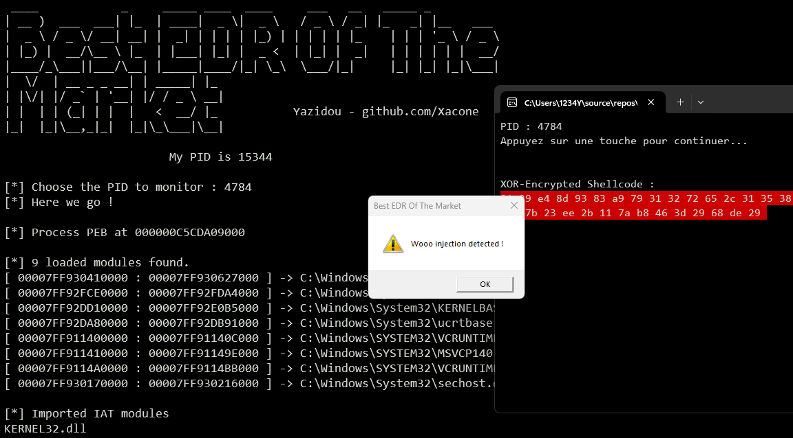
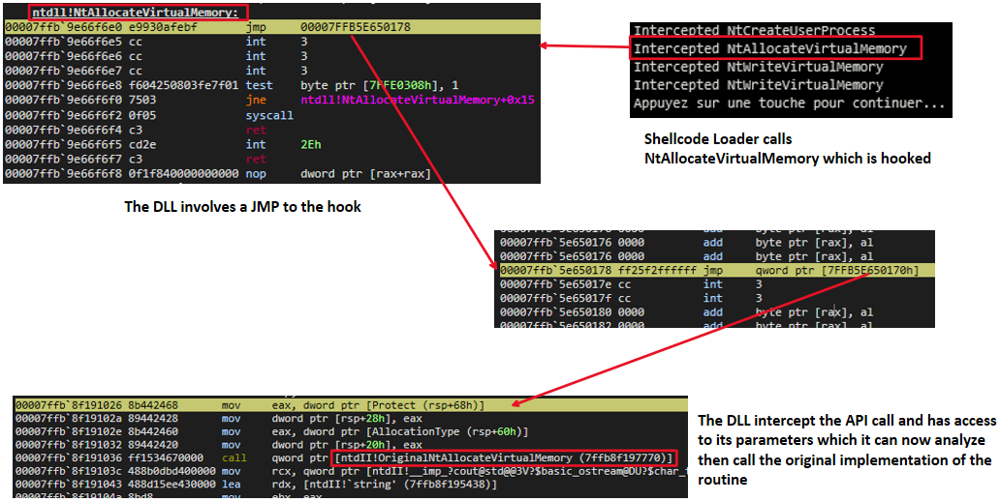
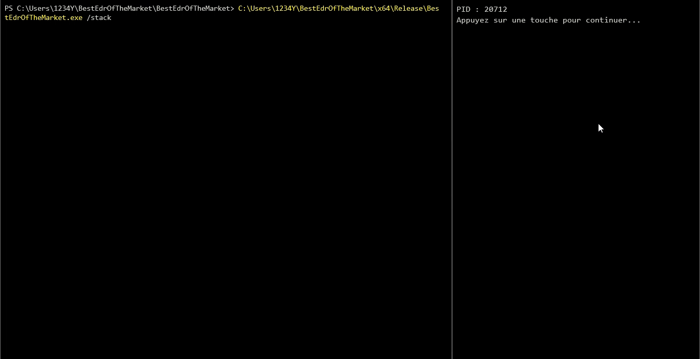
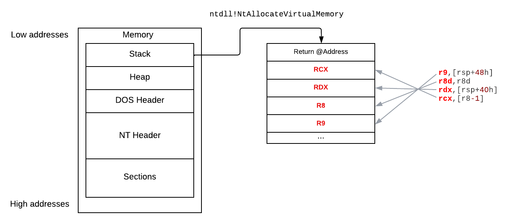
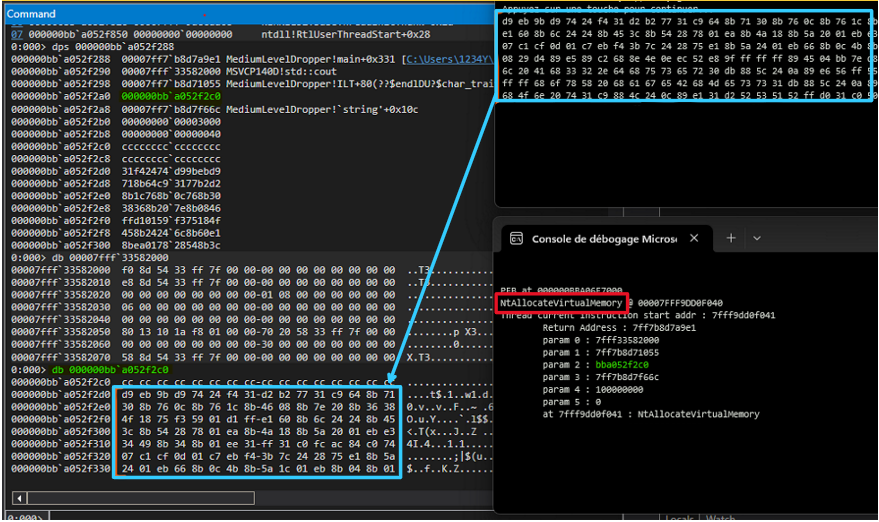
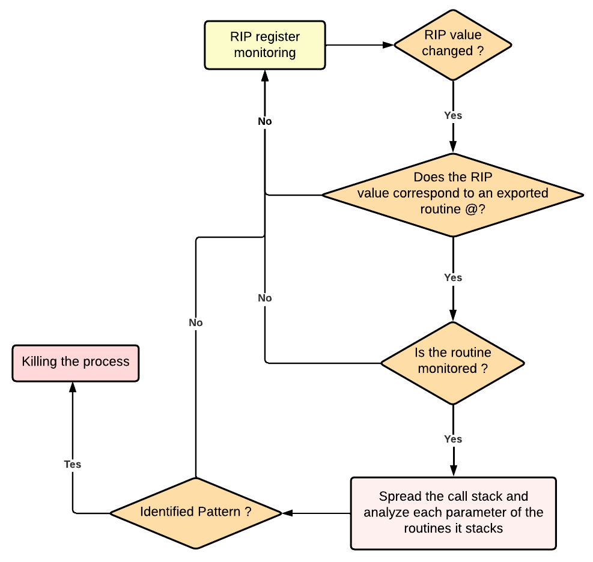
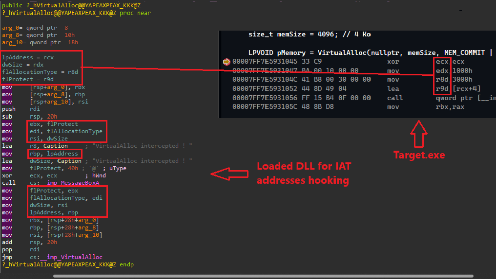
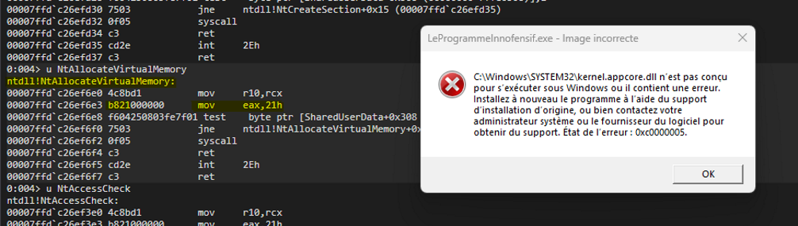
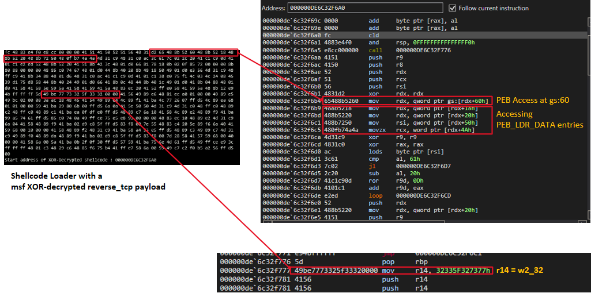

You gotta worry bout' them malicious processes...
TL;DR
The Best EDR Of The Market (BEOTM) is an open source EDR designed to serve as a testing ground for understanding and bypassing some of the detection mechanisms employed by many well-known EDRs. These methods focus on the dynamic analysis of a process and its states (memory, call stack, heap, API calls, etc.).The purpose of this article is not to delve too deeply into details of these methods that are fully covered in other articles (which I may not explain any better), but to give a brief overview of how these methods are implemented in BEOTM.

DLL Hooking ⚔️
BEOTM performs DLL injection at multiple levels of abstraction, hooking sensitive functions such as those used for memory allocation, process or thread creation/manipulation, changing memory pools access rights, etc. This hooking is achieved by injecting the DLL into the target process.Once injected, the DLL will redirect calls from hooked functions to its own internal routines to inspect their content and then decide whether or not to proceed with the call by invoking the original routine.
Obviously, the purpose of implementing this technique in BEOTM is not to analyze the parameters of each function, primarily for performance reasons: BEOTM distinguishes itself from the typical architecture in serving as both an agent and an analyzer/scheduler of responses. In contrast, a typical EDR would send the captured data to an external entity, which would then be responsible for orchestrating the response. On the other hand, it would have been much more resource-intensive to initiate an analysis for each API call made by a targeted program.
Moreover, bypassing this mechanism primarily involves preventing the routines from being intercepted by the injected DLL. Thus, the EDR either limits itself (for now) by showing a message through the standard output (for NTDLL hooks) or by displaying a MessageBox (for Kernelbase/Kernel32 hooks) alerting that the routine has been intercepted.
I am currently studying the feasibility of RPC communication between the injected DLL and the EDR as an enhancement.
NT-Level hooking VS Reflective DLL Loader:

Kernel32-Level hooking VS benign process:
.gif)
If you're wondering why interceptions at the NT level only return a message to the standard output, unlike interceptions at the Kernel32 level, it's because the NT level is much more sensitive, being very low-level: Displaying a large messagebox could interfere with or corrupt the interception.
Hooked Routines/Functions
The functions that are hooked by the EDR through the injected DLLs are described in the"TrigerringFunctions.json" file. The release version of BEOTM includes precompiled DLLs, but you can still compile the DLLs from the repo sources with the functions you want to intercept. 🪝
BEOTM's injectable DLLs rely on Microsoft Detours as an interface for API calls interception.
A deep overview of what happens when
NtAllocateVirtualMemory is intercepted by the DLL:

Threads Call Stack Monitoring ⚔️
This method involves the continuous monitoring of the RIP instruction register of each thread. When the RIP register points to the address of an exported routine/function from any DLL or to the address of an area contained in the implementation of this export, and the user has specified in theTrigerringFunctions.json file that they want to monitor this routine/function, the thread is paused, and its call stack is unwound. All parameters of all routines it stacks are analyzed. If a sequence of bytes in a parameter matches a predefined pattern in the YaroRules.json file, the process is stopped, and an alert is issued! 🚨
Unlike DLL hooking & IAT hooking, there is indeed a response with this method: You can specify in the
TrigerringFunctions.json file which functions you want to monitor at the thread call stack level and you can define the patterns you want to identify in YaroRules.json.
Threads Call Stack Monitoring VS NT-Level XOR-Encrypted Shellcode Loader :

Threads Call Stack Monitoring VS Reflective DLL Loader:

Let's take a look at a low level of what happens, here's a simple program that allocates a virtual memory pool of 4096 bytes through VirtualAlloc :
int main() {
size_t memSize = 4096; // 4 Ko
LPVOID pMemory = VirtualAlloc(nullptr, memSize, MEM_COMMIT | MEM_RESERVE, PAGE_READWRITE);
return 0;
}
The values of the four parameters are transmitted to registers r8, r9, rcx and rdx which will be then passed to the stack :
KERNELBASE!VirtualAlloc+0x22:
00007ffb`9bdd1402 4183e0c0 and r8d,0FFFFFFC0h
00007ffb`9bdd1406 44894c2428 mov dword ptr [rsp+28h],r9d
00007ffb`9bdd140b 4489442420 mov dword ptr [rsp+20h],r8d
00007ffb`9bdd1410 4c8d4c2448 lea r9,[rsp+48h]
00007ffb`9bdd1415 4533c0 xor r8d,r8d
00007ffb`9bdd1418 488d542440 lea rdx,[rsp+40h]
00007ffb`9bdd141d 498d48ff lea rcx,[r8-1]
00007ffb`9bdd1421 48ff1500ea1f00 call qword ptr [KERNELBASE!_imp_NtAllocateVirtualMemory (00007ffb`9bfcfe28)]
00007ffb`9bdd1428 0f1f440000 nop dword ptr [rax+rax]
00007ffb`9bdd142d 85c0 test eax,eax
00007ffb`9bdd142f 780b js KERNELBASE!VirtualAlloc+0x5c (00007ffb`9bdd143c)
NtAllocateVirtualMemory:

If we set a breakpoint at
ntdll!NtAllocateVirtualMemory on the shellcode loader, and unroll the call stack when the breakpoint is reached, you'll see that an address is passed as a parameter to the routine, corresponding to a pointer to the xor-decrypted shellcode.

Here's a global conditional diagram of how threads call stack monioring works on BEOTM :

Import Address Table (IAT) Hooking ⚔️
This method operates at the Import Address Table (IAT) level of the target process by overwriting the addresses of legitimate imports with the addresses of exports from an injected DLL. While it may seem similar to DLL hooking due to the injection of a DLL, it is not the case at all, as this method does not involve a 'jmp' instruction to a trampoline function.
A MessageBox is shown for each intercepted function.
IAT-hooking VS Reflective DLL Loader:

Some might (perhaps) wonder, as I did, how the registers are preserved with this interception method to be later analyzed, even with the addition of a MessageBox or any instruction that could potentially corrupt the register values and distort the parameter values. Well, all it takes is firing up IDA to get the answer: this method does not prevent the preservation and backup of the values of the registers r8, r9, rcx, and rdx into other registers (rbx, rdi, rsi). 👍

SSN Crushing🥊
Well, that's one is purely imaginative and not realistic at all, it simply consists in crushing/overriding the value of the Syscall / SSN (System Service Number) at the NT-level with 0x21.This will cause the process to stop working in most cases if you touch important routines, either because the program has detected an integrity error in the ntdll checksum it has loaded into memory or because the syscall has simply been corrupted.

So what's the point of that ? Simply for making you try, from an attacker point of view, to revert the value of the syscall and override it with its real value that you would have fetched by any mean. 😉
Yaro rules 🔍
The YaroRules.json file contains nothing more than the patterns you wish to identify. You can have fun searching for interesting patterns common to many shellcodes/payloads, like in this example that identifies patterns related to accessing the PEB and traversing LDR entries for a metasploit-generated reverse TCP shellcode.

You could also add certain patterns of known malicious artifacts (e.g., Mimikatz). I will probably take a moment to do that as well
YaroRules.json contains 5 default patterns corresponding to the pattern of accessing the PEB and PEB_LDR_DATA entries for a reverse_tcp shellcode generated by Metasploit. There are also 3 other patterns corresponding to areas in the DOS header of a PE-format object.
{
"Patterns": [
"d2 65 48 8b 52 60 48 8b 52 18 48 8b 52 20 48 8b 72 50 48",
"49 be 77 73 32 5f 33 32 00 00",
"4D 5A 90 00 03 00 00 00 04 00 00 00 FF FF 00 00 B8 00 00 00 00 00 00 00 40 00 00 00 00 00 00 00 00 00 00 00 00 00 00 00 00 00",
"00 F0 00 00 00 0E 1F BA 0E 00 B4 09 CD 21 B8 01 4C CD 21 54 68 69 73 20 70 72 6F 67 72 61 6D 20 63 61 6E 6E 6F 74 20 62 65 20 72 75 6E 20 69 6E 20 44 4F 53 20 6D 6F 64 65 2E"
]
}Epilogue
I tried to provide a very quick overview of the techniques implemented in BEOTM without going into details about the bypassing methods for each defense mechanism shown here.I am far from being an expert in EDR evasion or defense mechanisms, but I thought it would be fun and instructive to build my own EDR that implements techniques whose bypassing is within reach for anyone with a basic knowledge of low-level programming and Windows internals. If interested, do not hesitate to delve into the source code of the EDR and take a look at the ways in which the user-mode defensive mechanisms are implemented, particularly with regard to remote processes memory access. 😉🏴☠️
I'm still learning so if you have a comment or observation on this article, feel free to contact me, my email addresses are on my Github profile 😸